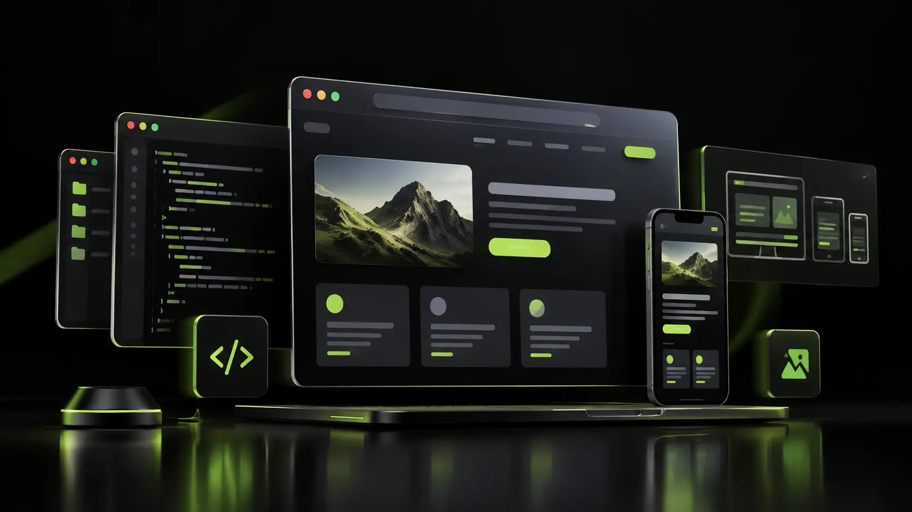

SAMSARATECH / WEB DEVELOPMENT
Websites built to
move business forward.
We design and develop fast, responsive websites that make your business easier to discover, trust and choose.

From first click to lasting growth
Our web development process combines clear strategy, thoughtful UI/UX and reliable engineering. Every page is structured for performance, accessibility, mobile-first usability and search visibility.
Discuss your website ->